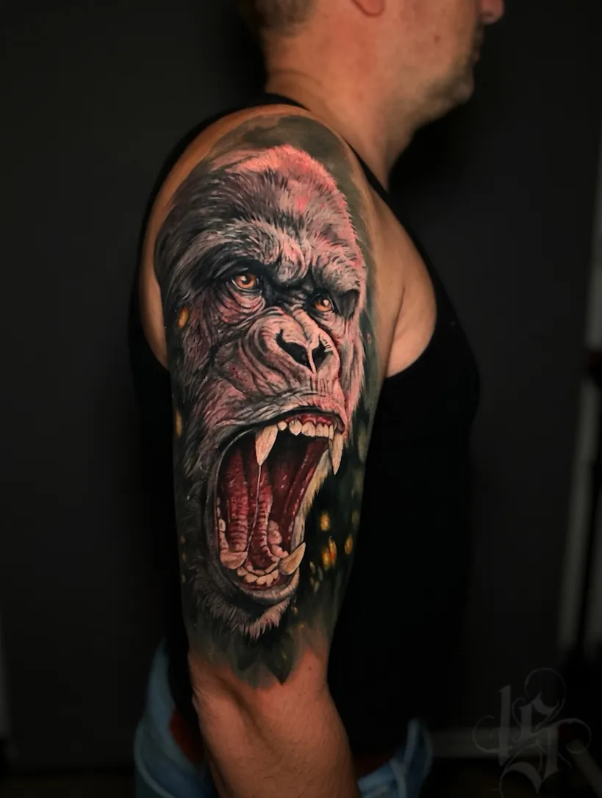
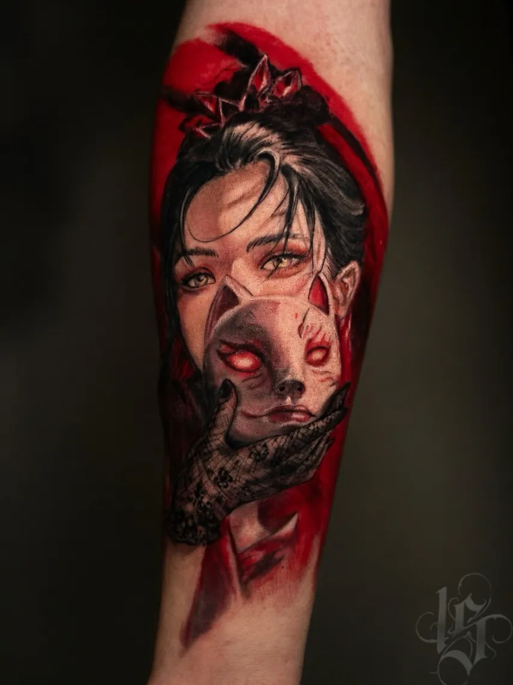
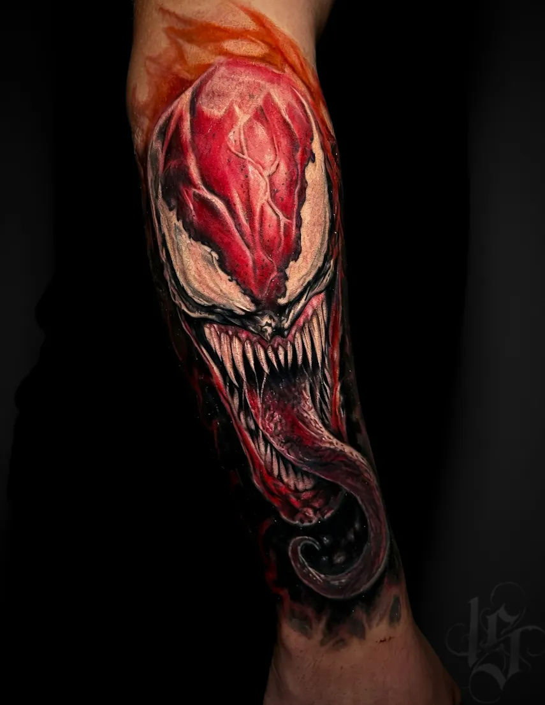
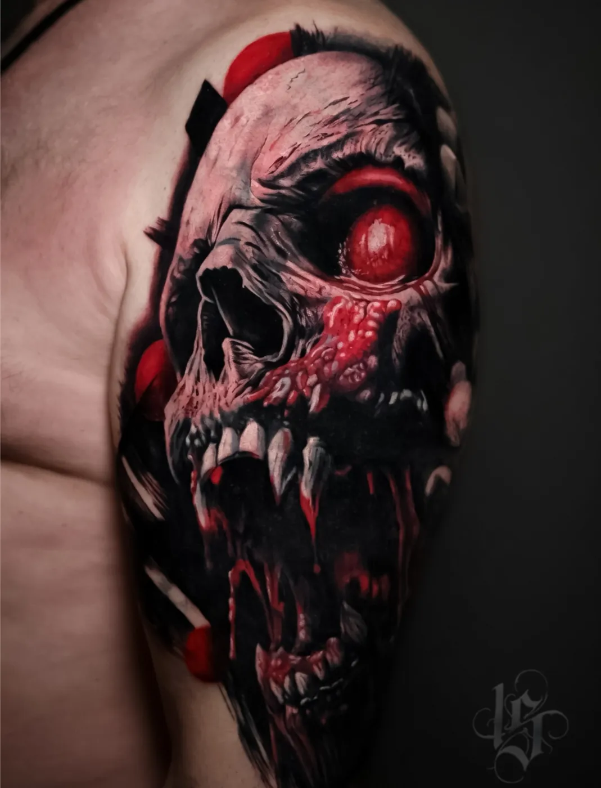
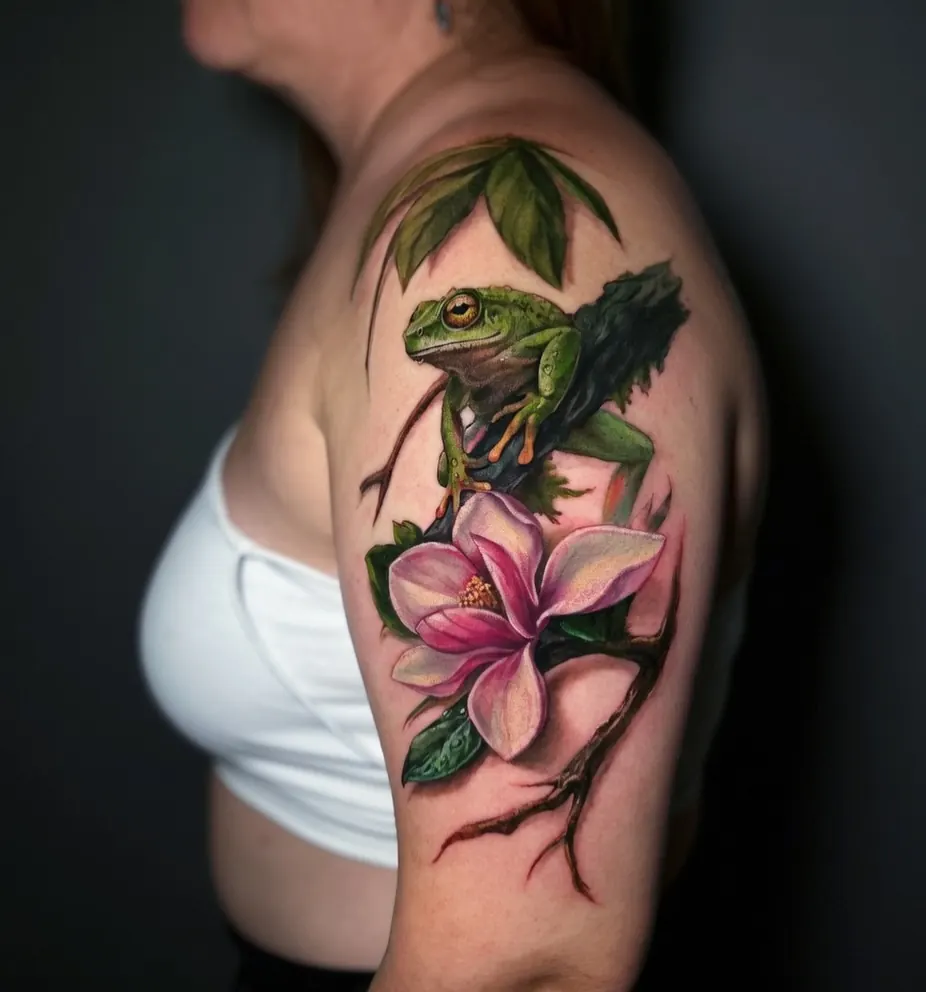

Тату-студия INKSIDE в Минске
Цветной реализм татуобъём и оттенки ✦
Животные, персонажи и портреты в цвете, с объёмом и переходами оттенков. Цену назовём до сеанса.








Все работы - наши, без стоков.
Как сохранитьцвет
- СолнцеУльтрафиолет делает пигмент бледнее, светлые оттенки страдают первыми.
- SPFПосле заживления на открытом солнце - крем с высоким SPF.
- Не перед моремСначала тату должна полностью зажить. Осень и зима - лучшее время.
Цвет
Когда важны оттенки: глаза животного, оперение, цветы, яркие персонажи.
Ч/б
Когда важнее настроение и контраст, а ещё для крупных тёмных сюжетов и перекрытий.
Вопросыкоротко
Цветная тату быстро выцветает?
Любая тату со временем немного смягчается. Быстрее всего цвет уходит от солнца, поэтому после заживления пользуйтесь кремом с высоким SPF.
Чем цветной реализм отличается от ч/б?
Ч/б работает с оттенками серого и контрастом, цветной - с оттенками и переходами цвета. Цветной обычно дольше и дороже.
Можно сделать цветную тату на загорелой коже?
На свежем загаре лучше не делать: кожа раздражена, и цвет может лечь хуже. Подождите, пока кожа успокоится.
Ещё вопросы и подробности · 8
Сколько стоит цветной реализм?
От 180 BYN за работу до 1 часа, каждый следующий час 150 BYN. По калькулятору цветная тату 10-20 см на руке - от 630 BYN.
Кто делает цветной реализм?
Мастер Надежда: цветной и ч/б реализм, микрореализм, тонкие линии и цвет.
Что такое цветной реализм
Цветной реализм передаёт объект так, как он выглядит в жизни: с оттенками, светом, бликами и объёмом. Если ч/б реализм работает с оттенками серого и контрастом, то цветной - с оттенками и переходами цвета. На стене работ это, например, гиена, горилла, гейша, феникс и девушка с красной вуалью.
Это одна из ветвей реализма. Общая страница стиля - реализм тату, про портреты отдельно - тату портрет.
Размер и детали
Цвету, как и полутонам, нужно место. При правильной глубине и расстоянии между деталями они не поплывут, поэтому мастер подгоняет эскиз под размер и место. Мелкие цветные детали со временем смягчаются сильнее крупных, так что для маленького размера рисунок иногда упрощают или чуть увеличивают.
Цвет и тон кожи
Пигмент ложится под кожу, поэтому её тон немного влияет на то, как выглядят оттенки. На светлой коже цвета выглядят ярче, на смуглой или загорелой некоторые светлые оттенки читаются мягче. Делать цветную тату на свежем загаре не стоит: кожа после солнца раздражена, и цвет может лечь хуже. Мастер подберёт палитру под вашу кожу на консультации.
Кто делает цветной реализм
Надежда - цветной и ч/б реализм, микрореализм, тонкие линии и цвет, большие проекты. Работы: Instagram и TikTok @st.nadya_tattoo. Опыт - больше 8 лет.
Как проходит работа
- Идея. Присылаете референс или просто мысль. Бесплатно обсуждаем размер, место и цену.
- Эскиз и стенсил. Эскиз рисуется под ваше тело, перевод на коже показывает, где пройдёт каждая линия.
- Сеанс. Одноразовые иглы вскрываем при вас. Крупное делим на сеансы.
- Заживление. План ухода по дням, через месяц присылаете фото, мы проверяем результат.
Сколько стоит цветной реализм
Базовые цены одинаковые для всех стилей, но цветной реализм обычно занимает больше времени, поэтому в калькуляторе он самый дорогой из стилей. Например, по калькулятору цветная тату 10-20 см на руке - от 630 BYN. Точную цену мастер называет после утверждения эскиза.
| Минимум, до 1 часа | 180 BYN |
| Каждый следующий час | 150 BYN |
| Эскиз под вас | от 40 BYN |
| Консультация | 0 BYN |
| До 5 см | от 180 BYN |
| 5-10 см | от 330 BYN |
| 10-20 см | от 480 BYN |
| Рукав, нога или большая работа (сеанс) | от 930 BYN |
Итоговую цену мастер называет после утверждения эскиза: важны детализация, размер и место.
Ещё по теме
 Реализмуслуга
Реализмуслуга Тату портретуслуга
Тату портретуслуга Надеждамастер
Надеждамастер Перекрытие татууслуга
Перекрытие татууслуга Коррекция татууслуга
Коррекция татууслуга Тату рукавуслуга
Тату рукавуслуга Мини татууслуга
Мини татууслуга Цены на татууслуга
Цены на татууслуга Главнаястудия
ГлавнаястудияЕщё думаете?просто спросите
Напишите идею в двух словах: мастер честно скажет, подойдёт ли она вам и сколько будет стоить.
- телефон
- +375 (44) 511-19-12